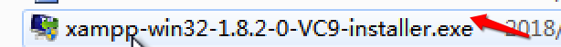
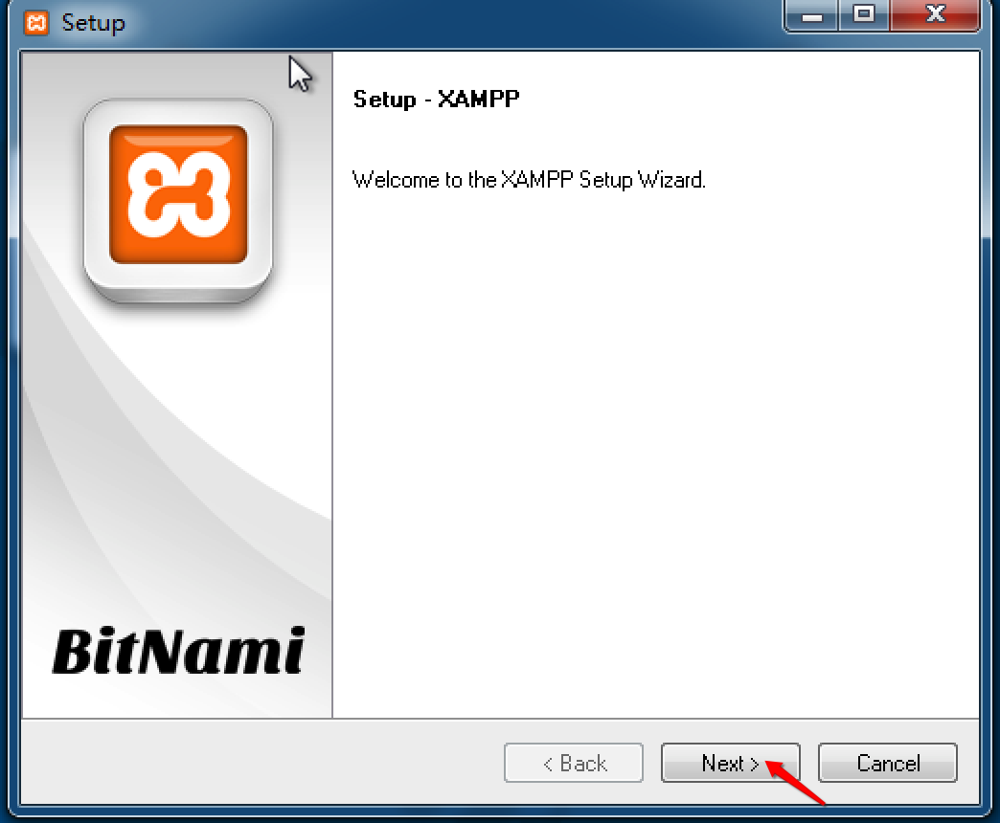
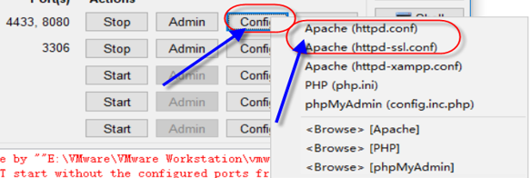
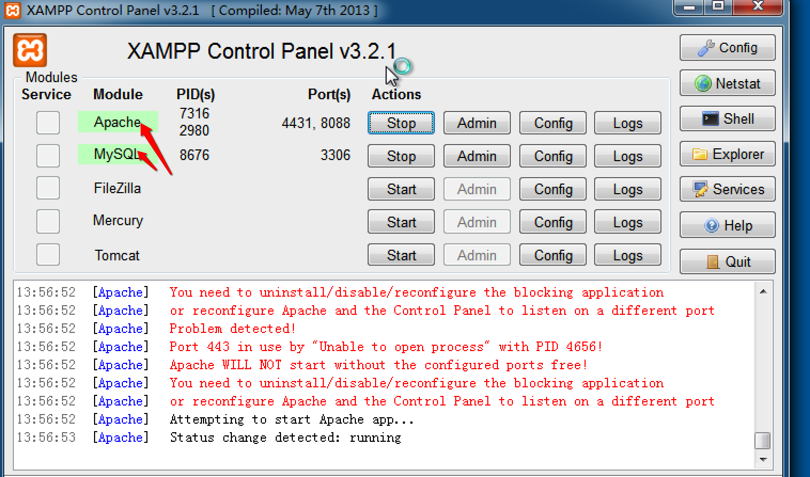

1. 测试环境
Linux下的环境搭建
LNMP: Linux+Nginx+Mysql+php项目
Windows下的环境搭建
WAMP: Windows+apache+Mysql+php项目
2. Xampp安装及使用
XAMPP包括Apache、MySQL、PHP、PERL，直接解压缩，没有复杂的安装过程，强烈推荐初学者使用。 到目前为止，XAMPP共支持Windows 、Linux、Mac OS X、Solaris四种版本。我们这里介绍的是XAMPP Windows版的安装及使用。
2.1 Xampp的安装
双击Xampp的安装文件 
安装界面 
一路点击next

进入安装apache和mysql

勾选start按钮 开启MySQL和Apache服务器
当安装XAMPP后，Apache启动失败，可能是端口被占用，修改端口即可（将红圈中配置文件中的80和443端口全部改成动态端口如443改成4431或4433,80改成8080或8088）  直到变成绿色 证明安装成功

2.2 iwebshop项目部署
将附件中的iwebshop.zip解压，把解压后的iwebshop文件夹复制到xampp安装路径下的 htdocs目录内，如C:\xampp\htdocs
在浏览器中输入 127.0.0.1:8088/iwebshop 端口号必须和启动的apache服务器端口号相同, 自动跳转到 http://127.0.0.1:8088/iwebshop/install/index.php
勾选我同意，点击下一步
按照下图填写
点击下一步,进入安装
前台链接
http://127.0.0.1:8088/iwebshop/index.php?controller=site&action=index.php
后台链接
http://127.0.0.1:8088/iwebshop/index.php?controller=systemadmin&action=index